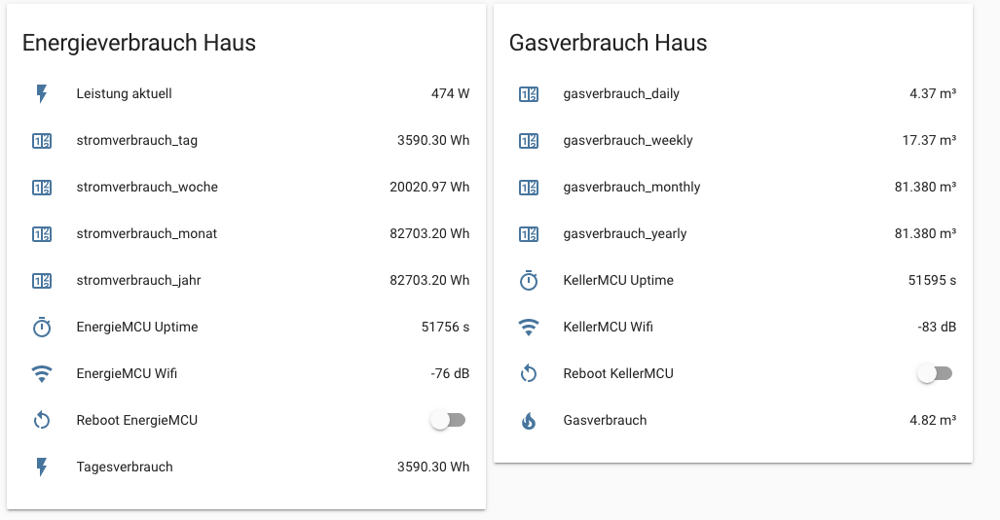

Gaszähler mit ESP8266 und Home Assistant auslesen¶
Ein Standardgaszähler hat auf den letzen Ziffern einen Magneten verbaut, der bei jedem Durchlauf mit einem Reed-Kontakt ausgelesen werden kann. Ein Reed-Kontakt (Magnetschalter) erzeugt bei jedem Durchlauf einen Impuls. Diese Impulse werden per ESPhome gezählt und in die Kubikmeter umgerechnet. 1 Impuls entspricht 0,01 m³.


benötigte Hardware¶
- ESP8266 NodeMCU
- Reed Sensor, z.B. MK-471B bei Reichelt
- Käbelchen
- USB-Netzteil
- Gehäuse, z.B. Kabelabzweigdose
Software auf ESP8266¶
Auszug ESPhome YAML¶
1 2 3 4 5 6 7 8 9 10 11 12 13 14 | - platform: pulse_counter pin: number: GPIO5 mode: INPUT_PULLUP name: "Gasverbrauch" update_interval : 60s filters: - lambda: |- static float total_value = 0.0; total_value += x * 0.01; return total_value; unit_of_measurement: "m³" accuracy_decimals: 2 icon: 'mdi:fire' |
Auswertung in Grafana¶
Zur besseren Darstellung der Verbrauchsdaten bietet sich Grafana an. Die Daten von Home Assistant werden hier in eine InfluxDB geschrieben und über Grafana visualisiert.